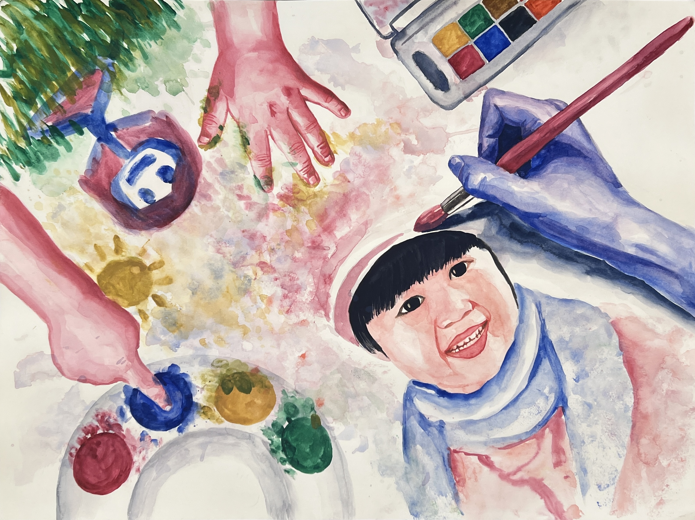

Crystal Zhou 2024
Watercolor on Paper, 18 x 24 in
In the world of Your Life Pages, people have a little more control over their time. This interactive world explores how everyday choices quietly shape the life we end up living, even though time is always finite. Users receive a simple life planner with three tasks: work, social connections, and personal joy, and make choices that feel natural to their habits. Once a task is completed, it is locked, reflecting the irreversibility of time. At the end, users receive a letter showing the life they have created, encouraging reflection rather than judging their decisions.
